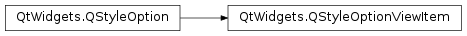

QStyleOptionViewItem¶
Detailed Description¶
The
PySide2.QtWidgets.QStyleOptionViewItemclass is used to describe the parameters used to draw an item in a view widget.
PySide2.QtWidgets.QStyleOptionViewItemcontains all the information thatPySide2.QtWidgets.QStylefunctions need to draw the items for Qt’s model/view classes.For performance reasons, the access to the member variables is direct (i.e., using the
.or->operator). This low-level feel makes the structures straightforward to use and emphasizes that these are simply parameters used by the style functions.For an example demonstrating how style options can be used, see the Styles example.
-
class
PySide2.QtWidgets.QStyleOptionViewItem¶ -
class
PySide2.QtWidgets.QStyleOptionViewItem(other) -
class
PySide2.QtWidgets.QStyleOptionViewItem(version) Parameters: - other –
PySide2.QtWidgets.QStyleOptionViewItem - version –
PySide2.QtCore.int
Constructs a
PySide2.QtWidgets.QStyleOptionViewItem, initializing the members variables to their default values.Constructs a copy of the
otherstyle option.- other –
-
PySide2.QtWidgets.QStyleOptionViewItem.StyleOptionType¶ This enum is used to hold information about the type of the style option, and is defined for each
PySide2.QtWidgets.QStyleOptionsubclass.Constant Description QStyleOptionViewItem.Type The type of style option provided ( SO_ViewItemfor this class).The type is used internally by
PySide2.QtWidgets.QStyleOption, its subclasses, andqstyleoption_cast()to determine the type of style option. In general you do not need to worry about this unless you want to create your ownPySide2.QtWidgets.QStyleOptionsubclass and your own styles.See also
QStyleOptionViewItem.StyleOptionVersion
-
PySide2.QtWidgets.QStyleOptionViewItem.StyleOptionVersion¶ This enum is used to hold information about the version of the style option, and is defined for each
PySide2.QtWidgets.QStyleOptionsubclass.Constant Description QStyleOptionViewItem.Version 4 The version is used by
PySide2.QtWidgets.QStyleOptionsubclasses to implement extensions without breaking compatibility. If you useqstyleoption_cast(), you normally do not need to check it.See also
QStyleOptionViewItem.StyleOptionType
-
PySide2.QtWidgets.QStyleOptionViewItem.Position¶ This enum describes the position of the item’s decoration.
Constant Description QStyleOptionViewItem.Left On the left of the text. QStyleOptionViewItem.Right On the right of the text. QStyleOptionViewItem.Top Above the text. QStyleOptionViewItem.Bottom Below the text. See also
decorationPosition
-
PySide2.QtWidgets.QStyleOptionViewItem.ViewItemFeature¶ This enum describes the different types of features an item can have.
Constant Description QStyleOptionViewItem.None Indicates a normal item. QStyleOptionViewItem.WrapText Indicates an item with wrapped text. QStyleOptionViewItem.Alternate Indicates that the item’s background is rendered using alternateBase. QStyleOptionViewItem.HasCheckIndicator Indicates that the item has a check state indicator. QStyleOptionViewItem.HasDisplay Indicates that the item has a display role. QStyleOptionViewItem.HasDecoration Indicates that the item has a decoration role.
-
PySide2.QtWidgets.QStyleOptionViewItem.ViewItemPosition¶ This enum is used to represent the placement of the item on a row. This can be used to draw items differently depending on their placement, for example by putting rounded edges at the beginning and end, and straight edges in between.
Constant Description QStyleOptionViewItem.Invalid The is unknown and should be disregarded. QStyleOptionViewItem.Beginning The item appears at the beginning of the row. QStyleOptionViewItem.Middle The item appears in the middle of the row. QStyleOptionViewItem.End The item appears at the end of the row. QStyleOptionViewItem.OnlyOne The item is the only one on the row, and is therefore both at the beginning and the end.
-
PySide2.QtWidgets.QStyleOptionViewItem.displayAlignment¶
-
PySide2.QtWidgets.QStyleOptionViewItem.decorationAlignment¶
-
PySide2.QtWidgets.QStyleOptionViewItem.textElideMode¶
-
PySide2.QtWidgets.QStyleOptionViewItem.decorationPosition¶
-
PySide2.QtWidgets.QStyleOptionViewItem.decorationSize¶
-
PySide2.QtWidgets.QStyleOptionViewItem.font¶
-
PySide2.QtWidgets.QStyleOptionViewItem.showDecorationSelected¶
-
PySide2.QtWidgets.QStyleOptionViewItem.features¶
-
PySide2.QtWidgets.QStyleOptionViewItem.locale¶
-
PySide2.QtWidgets.QStyleOptionViewItem.widget¶
-
PySide2.QtWidgets.QStyleOptionViewItem.index¶
-
PySide2.QtWidgets.QStyleOptionViewItem.checkState¶
-
PySide2.QtWidgets.QStyleOptionViewItem.icon¶
-
PySide2.QtWidgets.QStyleOptionViewItem.text¶
-
PySide2.QtWidgets.QStyleOptionViewItem.viewItemPosition¶
-
PySide2.QtWidgets.QStyleOptionViewItem.backgroundBrush¶
© 2018 The Qt Company Ltd. Documentation contributions included herein are the copyrights of their respective owners. The documentation provided herein is licensed under the terms of the GNU Free Documentation License version 1.3 as published by the Free Software Foundation. Qt and respective logos are trademarks of The Qt Company Ltd. in Finland and/or other countries worldwide. All other trademarks are property of their respective owners.